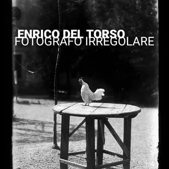

da sab 7 nov a gio 7 gen
Enrico del Torso | Fotografo irregolare
A 150 dalla sua nascita, avvenuta a Trieste nel 1876, quella che fu la sua villa di campagna a Tissano, acquistata nel 1912 in vista del suo matrimonio con la nobildonna Cecilia Beretta, ospiterà una mostra fotografica di Enrico del Torso con un significativo campionario di…
 Indicazioni
Indicazioni
- Costi e prenotazioni
- Costo non indicato · Prenotazione non indicata
- Programma
- Programma da verificare. Apri la fonte ufficiale per orari e possibili aggiornamenti.
- In caso di maltempo
- Nessuna indicazione specifica pubblicata.
- Note
- Acquisito automaticamente dalla fonte.
L’EVENTO
Descrizione completa
A 150 dalla sua nascita, avvenuta a Trieste nel 1876, quella che fu la sua villa di campagna a Tissano, acquistata nel 1912 in vista del suo matrimonio con la nobildonna Cecilia Beretta, ospiterà una mostra fotografica di Enrico del Torso con un significativo campionario di immagini da lui stesso scattate proprio in questa dimora seicentesca durante la Belle epoque. Grazie alla concessione della Fondazione Alinari le fotografie esposte nella mostra e riprodotte in un elegante catalogo si è potuto fare ritornare temporaneamente a casa diverse testimonianze storiche restituendole agli occhi dei contemporanei.
Lo storico della fotografia Italo Zannier inquadra le immagini di del Torso nel contesto di quel fenomeno di fine Ottocento rappresentano dai fotografi "irregolari" , per lo più aristocratici e benestanti, appassionati dei nuovi strumenti fotografici e aperti alla modernità. "Irregolari" - spiega Zannier - "in quanto liberi, oltretutto, dai condizionamenti commerciali degli atelier, cui spetta un capitolo a se stante nella storia della fotografia italiana". Secondo lo storico del settore, l'opera fotografica del conte Enrico del Torso ha occupato uno spazio di primo piano, specialmente negli anni venti, con le sue seducenti immagini che offrono un 'idea inconsueta del Friuli , presentando in effetti l'altro Friuli, ovvero quello dolce e agiato dell'aristocrazia locale che si contrappone alla povertà contadina di questo territorio di confine più diffusamente rappresentata.
L'arte fotografica attraeva questi personaggi aperti alla modernità che vi si impegnavano probabilmente anche come status symbol.
La fotografia di del Torso, come appare nella rassegna di villa di Tissano, è "il frutto di una cultura figurativa notevole, e di una curiosità ed eleganza rare, innanzitutto nel rigore della composizione e della tecnica, ma anche nella scelta dei soggetti", afferma ancora Zannier. Quello che si vedrà nella mostra è un diario familiare contestualizzato nella dimora storica di Tissano dove il giovane nobiluomo si divertiva a ritrarre familiari e amici senza pose, nella naturalezza della vita quotidiana, per documentare il suo tempo. E la sua ambizione artistica lo portò a proporre le sue fotografie ad importanti pubblicazioni di settore della sua epoca.
Figlio del nobile Antonio del Torso e della contessa Angela Romano, Enrico si laureò in giurisprudenza a Bologna nel 1901 e si occupò di molteplici studi storici, araldici, toponomastici, epigrafici, numismatici. Alla sua morte, avvenuta a Udine nel 1955, il nipote Stefano donò alla biblioteca Joppi del capoluogo friulano un enorme compendio librario relativo ai suoi molteplici studi, tra cui una raccolta di sue fotografie dal Friuli, mentre la gran parte delle lastre fotografiche sono state donate alla fondazione Alinari di Firenze.
Inaugurazione : 7 novembre, ore 17.00
Mostra visitabile fino al 7 gennaio 2027
Tutti i giorni: 10.00 - 20.00
Info: +39 331 1989453
Ingresso libero
IL PROGRAMMA
Programma e orari
Appuntamenti raccolti dalle fonti elencate. Dove manca un orario, non è ancora disponibile in questa scheda.
Programma pubblicato
- Dal 2026-11-07 al 2027-01-07
INFORMAZIONI UTILI
Prima di partire
- Controllare la fonte prima di partire.
ORGANIZZAZIONE